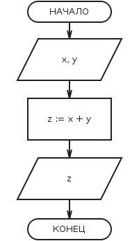

В інформатиці введення/виведення (в англ. мові часто використовується скорочення I/O - Input/Output) означає взаємодію між обробником інформації (наприклад, комп'ютером) та зовнішнім світом, який може представляти як людина, так і будь-яка інша система обробки інформації.
Введення — сигнал або дані, отримані системою, а виведення — сигнал або дані, надіслані нею (або з неї).
Виведення суми чисел (малюнок з додатку):
